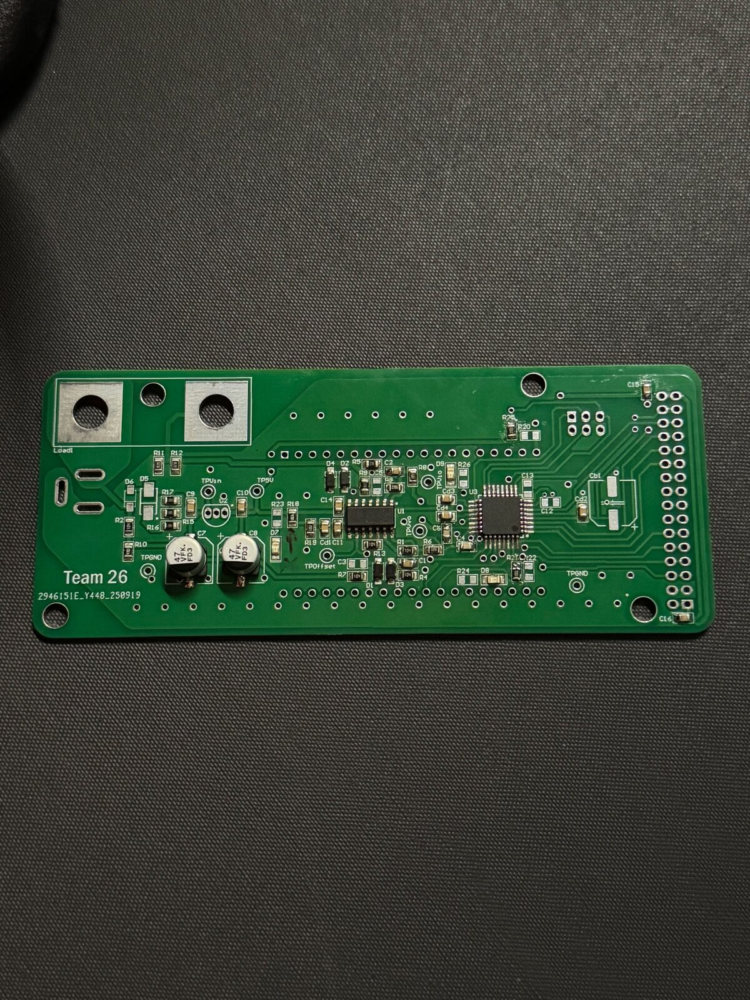
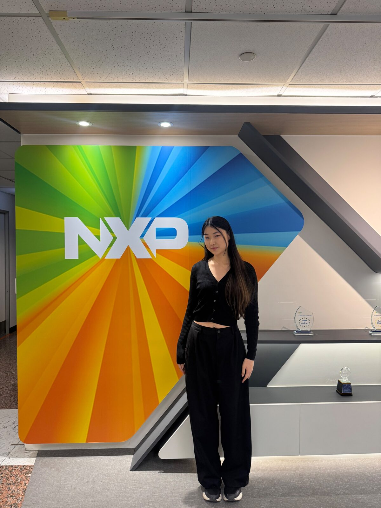
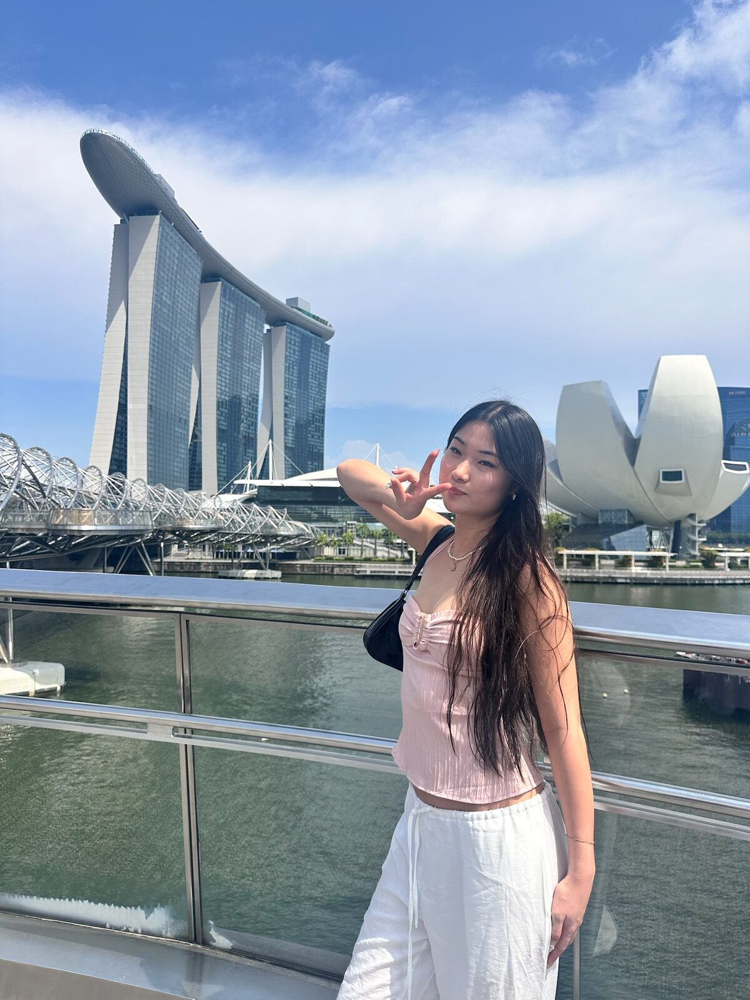

About
I'm a Part III (third-year) Electrical & Electronic Engineering student, having recently completed a semester exchange at National Taiwan University. I love engineering because I love turning an idea into something built with my own hands — and solving whatever comes up along the way, whether that's debugging a waveform on an oscilloscope or training a model and watching it run in real time on hardware I built myself.
Outside of coursework, I make time for things that keep me grounded — swimming, learning French, travelling, and lately, renovating my home from top to bottom. I'm also part of the IEEE Executive Committee at UoA, which has become one of my favourite ways to stay connected to the wider engineering community.



Selected work
Garbage Bag Recognition System
Part III Project · 2026An end-to-end edge AI system: identified improperly disposed garbage bags as a real workload driver through stakeholder interviews, then built and deployed a real-time detection model to solve it.
- Identified unsorted garbage disposal as a key driver of cleaning staff workload through stakeholder interviews and root-cause analysis
- Built a custom image dataset and trained a YOLOv8 object-detection model for real-time identification
- Deployed the trained model on a Raspberry Pi (edge device), integrating a live camera feed with a web dashboard for evidence review and reporting
- Used AI tools (Gemini, Copilot, Cursor) throughout development to accelerate iteration and debug training pipelines
Energy Monitor
Part II ProjectA custom-designed and hand-built PCB measuring voltage, RMS current, and average power, with firmware written and validated from the ground up.
- Designed and routed a custom PCB in Altium Designer to measure voltage, RMS current, and average power; output to a 7-segment display module
- Wrote embedded C firmware for an ATmega328P in Microchip Studio; validated signal behaviour in LTspice and Proteus
- Soldered and assembled the finished board, then used an oscilloscope to debug and verify waveforms

SMART Car
IEEE Outreach EventLed a hands-on workshop teaching first-year students to build an autonomous obstacle-avoiding car — technical build plus technical mentoring.
- Organised and led a workshop introducing first-year students to EE by building an autonomous SMART car
- Programmed obstacle-avoidance logic in Arduino C++ using ultrasonic sensors
- Guided participants through wiring, assembly, and testing
Track record
Wafer Test Intern
Dec 2025 – Feb 2026- Supported semiconductor wafer test operations using RPA, KVM, and VNC to streamline data review and reduce manual testing time
- Integrated AI tools into lab workflows to improve testing efficiency and accuracy across high-volume review
- Authored an SOP handbook standardising RPA testing procedures, reducing errors across the team
- Presented test progress and Gantt-chart project timelines to senior engineers
Tutor
Feb 2020 – Current- Tutored children aged 6–11 in Math, English, and Chinese — patience, adaptability, clear communication
Waitress
Aug 2024 – Jun 2025- Delivered attentive, precise service in a fast-paced dining environment — multitasking and communication under pressure